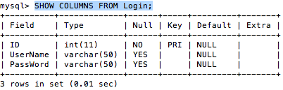

Select statement - MySQL Relational Database
Using SELECT to query Data
In our last page we learned how to drop an existing table, create a table and insert some values into that table. In this section we are going to learn how to query some of the data we inserted into our table. One of the ways I am going to run queries for my database is by using my command line. This can also be done using the phpMyAdmin tool through the browser, but I find it faster to just type in commands through the command line. Previously, I showed you how to navigate to your mysql database using xampp by using the change directory command and typing in the directory '/applications/xampp/xamppfiles/bin'. Once your open your mysql application by typing in './mysql -u username -p' we can begin to start writing some queries. One of the first commands you might want to learn is the show databases command, always end your queries with the semicolon.
Code:
SHOW databases;
If you don't have any databases or want to create a new one, you can just create one with the query 'CREATE DATABASE databasename;' (I'm going to use myDB for this example). Then you can select your database with the 'use' command.
Code:
CREATE DATABASE myDB;
USE myDB;
If the query worked correctly then the words 'Query OK, 1 row affected.' followed by 'Database changed' should have been displayed otherwise it will usually return either an error message or returned 0 rows. We can always drop the database if we want to change the name or if we want to re-create it under the same name using 'DROP DATABASE databasename;'. Now let's view our tables 'show tables'.
Code:
SHOW tables;
At this point you should be able to see all the tables displayed in the database you selected. From here you can select the contents of the table you want to view by typing in 'SELECT * FROM Login;'.
Code:
SELECT * FROM Login;
Alright, so we were able to view the values contained within our table. What if we wanted to see the contents of the columns, containing the datatype, how many chars or numbers allowed per column, whether the column can contain null values, which columns are primary keys etc. For this we can use the query 'show columns from tablename;'
Code:
SHOW COLUMNS FROM Login;
Previous Page Next Page